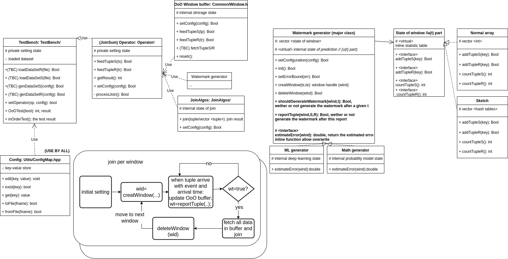

The OoOJoin project contains the basic ideas and evaluation on a novel join operator that supports error-bounded processing on out-of-order tuples
System Overview
The whole work is complete join operator, including basic windowing, buffering and join computation. However, watermark generation is the major focus.
Benchmark Tips
usage: ./benchmark [configfile]
- Note
- Require configs in configfile
- "windowLenMs" U64 The real world window length in ms
- "timeStepUs" U64 The simulation step in us
- "watermarkPeriodMs" U64 The real world watermark generation period in ms
- "maxArrivalSkewMs" U64 The maximum real-world arrival skewness in ms
- "eventRateKTps" U64 The real-world rate of spawn event, in KTuples/s
- "keyRange" U64 The range of Key
- "operator" String The operator to be used, see OperatorTable class for all valid tags
- "dataLoader" String The dataloader to be used, see DataLoaderTable class for all valid tags
Code Overview
The code structure aligns well with system design.

How to extend
How to extend a new DataLoader
- copy the TestBench/AbstractDataLoader.h, to your extension of TestBench/xxx.h, assume xxx is your new dataloader
- make it inherited from AbstractDataLoader
- creat the corresponding TestBench/xxx.cpp, fill in the virtual functions
- your extension may require extra specific configs, please name as xxx_yyy, and then state them in TestBench/xxx.h and leave a default value in your setConfig
- edit the TestBench/DataLoaderTable.cpp so the benchmark system can find it by tag
- assign "dataLoader" in global config file into your own tag of xxx when running, so the data will be loaded by your xxx
How to extend a new Operator
- copy the Operator/AbstractOperator.h, to your extension of Operator/xxx.h, assume xxx is your new Operator
- make it inherited from AbstractOperator
- creat the corresponding Operator/xxx.cpp, fill in the virtual functions
- your extension may require extra specific configs, please name as xxx_yyy, and then state them in Operator/xxx.h and leave a default value in your setConfig
- edit the Operator/OperatorTable.cpp so the benchmark system can find it by tag
- assign "operator" in global config file into your own tag of xxx when running, so the data will be processed by your xxx operator